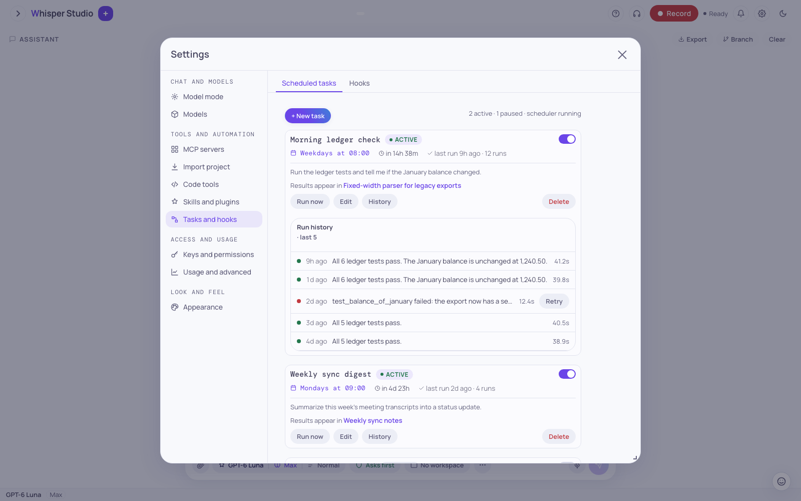
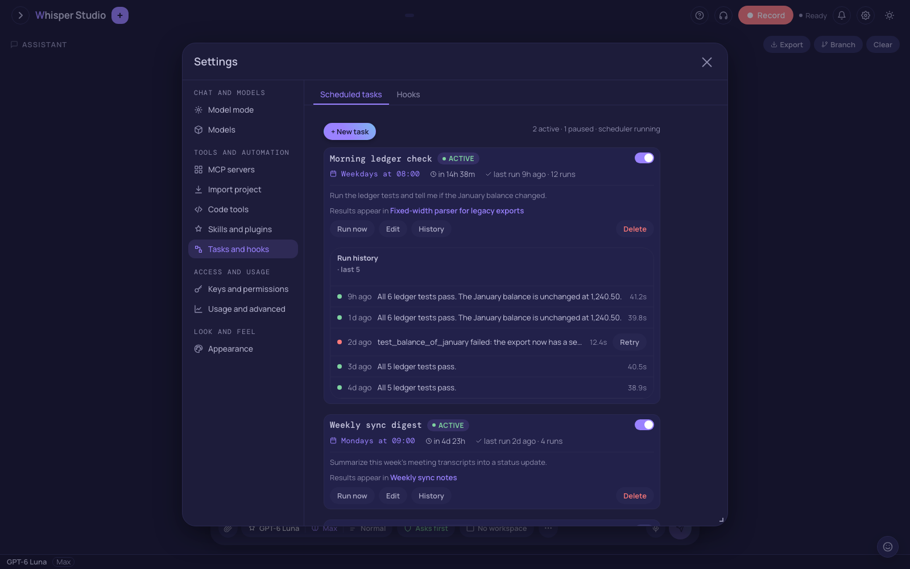

Scheduled tasks (cron)
Ask Whisper Studio to run a prompt on a schedule. The result of each run comes into the conversation that made the job. Past result cards do not go into the prompts of your next messages.
A cron job is a prompt and a schedule. You describe both in usual words. Claude makes the
job with the cron_create tool, and the job then runs on its schedule. Each run
writes a small card into the chat that made the job. Thus, the history shows from top to
bottom, as in a usual conversation. This tutorial shows how to make a job, read the result
cards, control jobs from the panel, and stop jobs.
Scheduled runs work only in Hybrid or Cloud mode. A new install starts in Local mode. In Local mode, the app refuses each scheduled run, and the run history shows the reason. The app keeps the job. To run the jobs, open "Settings", then "Model mode", and select Hybrid or Cloud.


Make a job in usual words
You do not complete a form. Type the task and the schedule in the chat box. Claude selects
the schedule type and calls cron_create.
Every 10 minutes, check our SageMaker endpoints and flag any that are not InService.-
Describe the task and the schedule
Give the instruction and the time together. Examples are every 30 minutes, daily at 9am, weekdays at noon, and once tomorrow at 08:00. Claude changes your words into a schedule. Refer to Schedule types.
-
Let Claude call cron_create
The model calls the
cron_createtool with aname, thepromptto run, and aschedule. The app writes the job to disk, so the job stays after a restart. The scheduler starts the schedule immediately. -
Read the confirmation
A small pill shows the job name and the schedule, for example "Cron sagemaker-check scheduled · every 10 min". The pill is the
cron_createdevent. It stays in the conversation as the start of the job. Nothing more occurs until the first run time.
Give the job a name that is easy to remember, for example "call it sagemaker-check". Each name must be unique. You use the name to edit, run, or delete the job.
Results in the chat
When a job runs, its prompt runs, and the output shows as a result card in the conversation that made the job. The card header shows the result, and the body shows the output as Markdown. A complete run shows:
- The job name and "fired" or "failed".
- A status chip, "ok" or "failed", and the duration of the run, for example
820msor8.2s. - The full output of the run.
- A "Next run" line at the bottom, with the time of the next run.
The result card goes into its conversation also when you look at a different session. You do not keep that chat open. When you open the conversation again, all the past runs are there, in the sequence of time, between the other messages.
A run with an urgent message can call notify_user, if the prompt tells Claude
to report a problem. The app adds that message to the result card and writes it to the
notification log. Thus, the bell in the header shows it. This is the pattern for a
monitoring job: examine the system, and send a notice only when a problem occurs.
If you delete or archive the conversation of a job, the next runs are not lost. They go to a pinned Scheduled Reports session.
Costs of runs and cards
Each run is a model turn, and the app records its cost. The result cards are only for the UI. The backend removes the cron event rows from the history before it makes a turn. Thus, a job with many past runs adds no tokens to your own turns in the same conversation. The runs get the same tool pool as a usual turn.
A cron run is a usual turn on the same turn engine as the chat. It uses the same round limits and the same tool safety gate. It does not use the model of your chat. The run uses one of these models:
- The
modelof the job, if you set one. It must be a configured Anthropic chat model.cron_createrefuses a different model. - Else, the first available model of:
haiku,sonnet5.5, and then the first configured chat model.
A scheduled run cannot use an on-device model. If the selected model is on-device, the run fails with an error.
By default, a quick check examines if the run did its prompt before the card shows "ok".
The cron_verify feature flag controls this check. Thus, the history of a failed
run shows the assertion that failed.
Schedule types
Each job has one of three schedule types. You describe the schedule in usual words, and Claude selects the type.
| Type | Runs | Example request |
|---|---|---|
interval | Every N minutes, from the time of creation. | every 10 minutes, every 2 hours |
cron | At a clock time, in a time zone, also correct when daylight saving time changes. | daily at 9am, weekdays at noon, every Monday 8am |
at | One time, at a specified time. Then the job disables itself. | tomorrow at 08:00, on 2026-07-06 at 9am |
Clock schedules use the time zone of this Mac by default. Thus, daily at 09:00 runs
at 09:00 local time, also after a clock change. To use a different time zone, name an IANA
time zone, for example America/New_York. To change the default for all jobs,
set cron_timezone in the settings.
A clock schedule can have more than one time. For example, at 9 and 4 gives two
runs each day. A day of the week can be one day (mon), a range
(mon-fri), or a list (mon,thu). Refer to
Cron / scheduled tasks.
If the app was closed at the run time
If the time of a clock job passed while Whisper Studio was closed, the app runs the job
one time at the next start. A time limit applies to this late run. The default is 1 hour
(cron_misfire_grace_sec, 3600 s). Thus, a Mac that was off for a week does not
run many old jobs.
Set a lower value to skip old runs. Set a higher value if the run is more important than its time. A job that did not run before waits for its next time. An interval job runs when its interval is complete after its last run.
Control jobs in the scheduled tasks panel
To see all your jobs, open "Settings", then "Scheduled tasks". The panel lists each job with its schedule, its next run, and a status chip. The chips are "Active", "Paused", "Running…", "Stopped", "Error", and "Orphaned".
Schedule form
Click "+ New task" to make a job, or "Edit" to change a job. Select an interval, a clock time, or one time. A preview shows the label and the next run time before you click "Save task".
Run history
Click "History" on a job to see its last runs with the status and the duration. Failed
runs are also there. The app keeps maximum 200 runs for each job
(cron_max_runs_per_job) and deletes older runs.
Unread badges
New runs show as unread badges in the sidebar. Thus, you see a new result also when you are in a different session.
Run, stop, pause, delete
Click "Run now" to run a job immediately. Click "Stop" to stop a run that is in progress. Disable a job to pause it. Enable it again when you continue to use it. A paused job keeps its history. Click "Delete", and then "Confirm", to remove a job.
Edit and stop jobs from the chat
You can also control jobs from the chat, in usual words. Claude uses these cron tools:
| Tool | Function |
|---|---|
cron_create | Makes a new job that repeats or runs one time. |
cron_list | Lists each job with its schedule and next run. |
cron_update | Changes the prompt, the schedule, the name, or the enabled state of a job. |
cron_run | Runs a job one time now, outside its schedule. |
cron_delete | Deletes a job by its name. |
Examples are "list my cron jobs", "run cron sagemaker-check now", and "change sagemaker-check to every 30 minutes". To stop a job, type one sentence:
delete cron sagemaker-checkA small pill, "Cron sagemaker-check removed", shows that the job is deleted. No more runs occur. When you change a schedule, the schedule starts again from the current time. Thus, the new schedule does not run immediately because of an old last run.
CAUTION: Write cron prompts carefully. A cron run has no person to ask, and the app does not stop to ask you.
A cron run gets the same tool pool as a usual turn: web search, tasks, sub-agents,
skills, AWS, MCP, and the browser. With an open workspace folder, it also gets the
workspace and Git tools. The app gives the core tools first. The other tools are in a
short index, and the run loads them with tool_search. The app removes only
ask_user_question.
A tool that usually shows an approval card runs with no card. These actions are refused:
- A write to the configuration files and the permission files of the app.
- A read of the credential stores.
- Some high-risk tools that do not run without a person.
- A tool that waits for an answer. It gets a refusal message, and the run continues.
Good cron jobs
Use cron for a check that you usually do manually on a schedule. Examples:
- A periodic health check, for example a list of AWS endpoints that are not in service.
- A summary each morning at 9am on weekdays.
- A reminder that runs a prompt one time at a specified time and then disables itself.
The result goes into the conversation of the request. Thus, a job is also a log: the request, the schedule, and all the results are in one conversation.
Next steps
You can now make a schedule, read the result cards, control jobs from the panel or the chat, and stop them. Then read these pages:
Run work in parallel
Start sub-agents in the background and control teams of agents.
See the mechanism
Clock schedules, run history, and how cron events show without a cost in tokens.
Related: Sub-agents & teams, Cron / scheduled tasks, and Chat & tool orchestration.